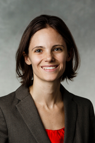

|  | |
Sarah Miracle Assistant Professor Department of Computer and Information Sciences University of St. Thomas Office: OSS 411 Mail: 2115 Summit Avenue # OSS-402, Saint Paul, MN 55105 Email: sarah (dot) miracle (at) stthomas (dot) edu |